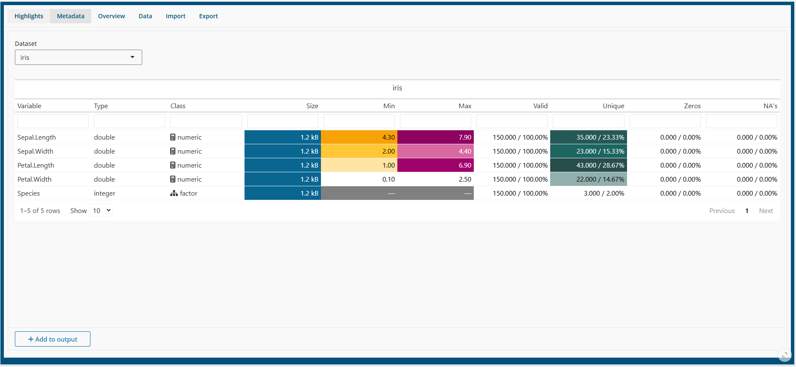

Data
Spada is capable of manage several datasets. The Active Dataset is shown in the sidebar and the navbar.But you can change the active dataset, import new datasets and export datasets.

Metadata

In Metadata one can see tyhe type and class of the variables, as well as some informatios about the data: min and max values, unique, valid, zeros and missing data.
It is possible to choose the datasets among the imported ones to show ta metadata. This does no change the Active Dataset.
Overview

The Overview allows the user to see some sample of Data. It is possible to choose the number of rows to show, as well as the position of the data (if first, last or a random sample of rows).
Data

In this tab one can change do:
- Rename a dataset
- Change the Active Dataset
- Copy a dataset
- Delete a dataset
As Spada requires at least one active dataset, it is no tpossible to delete the Active one.